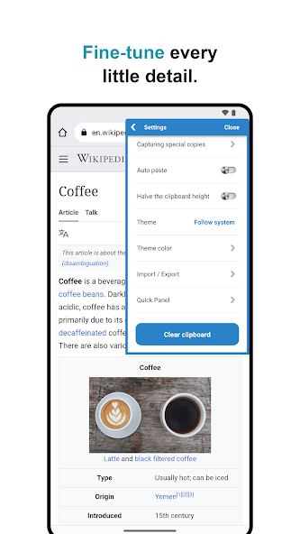

我把剪贴板嵌进客服工作流，每天少点了两百次复制
以前发一条收货地址要跨三个应用翻找复制，现在悬浮窗一键贴完——讲我怎么把 clipboard 插进日常客服接单的完整链路，以及流程里最容易断的两个环节怎么补。
每周五下午我要处理一批批量订单的收件确认，以前这条链要跨三个应用：从 Excel 导出地址列表 → 切到企业微信翻历史消息找话术模板 → 再跳回订单表格核对单号。单条信息至少三次手动复制，遇上客户临时改地址或要加备注，来回切换把思路都打断了。
旧流程到底卡在哪
说穿了就是一件事：临时复制的东西没有个落脚的地方。
微信里的话术模板存收藏夹，找一条要点开收藏、切到对应分类、长按复制三步；订单里的地址复制完贴微信对话框还好，但客户如果追加了"收件人改王姐"，就得重新切回 Excel 定位那一行——复制粘贴本身不费时间，切应用 + 定位内容才是隐形开销。我粗略数过，一个下午处理 30 单，光是在三个应用间跳来跳去就消耗了差不多 40 分钟。
试过把话术同步到云笔记，又觉得"太正式"——云笔记适合长文档，我要的是"拿了就走、用完就不管"的临时中转站。真正的瓶颈不在存储，在取用速度。
新流程：把 clipboard 插进哪一环
装上这款clipboard官网之后——安装包从官方下载拿的，装完就是默认配置——我的流程改成了这样：
- Excel 里的地址直接复制——系统自动记录，不用存任何地方；
- 常用话术提前塞进备忘——"您好，您的订单已发出"这类固定句式，一次写好永久可用；
- 接单时只留两个应用开着：订单表格 + 企业微信，悬浮窗常驻屏幕边缘。
关键衔接点是备忘和历史的配合：固定话术走备忘，临时地址走历史，互不抢额度。悬浮窗一点即出，切应用的动作省掉了八成。

上下游配合什么
- Excel：照旧用，只是复制完不用再找"粘贴板"了，系统自动记；
- 企业微信：开启自动粘贴后，点悬浮窗条目直接落进输入框，连"长按粘贴"这一步都省了；
- 偶尔的临时链接（客户发的取件码、地图定位）：复制进来就是一条历史，需要再用的时候搜域名关键词就能秒找。
我没特意给这个流程装别的工具，就靠 clipboard 自己的两个机制：自动记录接住临时内容，备忘模板兜住固定内容。
流程里最容易断链的两个环节
跑了三周，有两个地方踩过坑，补上之后流程就稳了。
环节一：历史滚到 1000 条之后
1000 条上限不是开玩笑的。重度用法（一天复制二三十次）撑一个月出头，轻量用户能滚大半年，但真的被顶掉东西的时候才后知后觉——我有次翻三周前的某个客户特殊要求，发现已经不在历史里了。
补救动作分两步：
- 重要条目转备忘：客户的长期收货偏好（比如"不要打电话直接放驿站"），从历史里长按 → 移动到备忘；
- 还在临时用但不想挪备忘的，点 Protect（保护）：这个功能我是翻clipboard文档才发现的——被保护的条目不参与"最旧先走"的淘汰，相当于给它开了绿色通道。
现在我每天下班前花两分钟过一眼当天复制的内容，值得留的转备忘或加保护。这个动作比卸载重装后找回数据要划算得多。
环节二：敏感信息用完没清
客户有时候会发身份证号或银行卡尾号用来核对订单，复制完贴出去就完了——但系统剪贴板里那条内容还在，下一个应用随时能读到。我之前没在意，直到有次借手机给同事看文档，发现她长按粘贴的时候还能看到我刚复制的客户手机号。
设置页底部的 Clear clipboard 按钮解决这个：它清的是"当前剪贴板里的那一条"，不是整份历史档案。我的做法是：
- 复制密码/验证码/身份证号这类敏感信息，贴完之后立刻点 Clear clipboard；
- 历史记录里的那条如果也不想留，去列表里对它 Delete——两个动作分开做，别嫌麻烦，隐私这种事漏一次就是事故。

效果与边界
省了多少事？没精确计时，但能感觉到一个下午的处理时间缩到了原来的三分之二——主要是少了反复切应用和翻收藏的时间。更重要的是思路不被打断了，以前切三次应用回来忘了客户刚才说什么是常事。
这套流程什么时候不划算？
- 纯文本极少的工作：比如只在一个应用里写文档，复制粘贴本来就是单应用内的事，clipboard 帮不上忙；
- 需要跨设备同步的场景：当前版本的剪贴板历史是本地存储的，我没在其他设备上试过同步——如果你有手机 + 平板 + 电脑多端接力的需求，可能还得另找方案；
- 大量图片复制的场景：它主要优化的是文本，图片历史的管理体验我没深入用过。
一点额外的心得
搜索历史的时候有个技巧：别搜整句话，搜特征词或号码尾缀。比如找"下午三点会议室见"那条，输"会议室"就够了；电话号记不住全串，搜末四位比搜"客户电话"快得多。这是官方 Quick search 本地侧的正确打开方式，和"复制即搜"那个把内容丢给搜索引擎的功能是两回事，别搞混。
这套工作流跑下来，我对 clipboard 的定位从"剪贴板管理器"变成了临时信息中转站——它不是云笔记那种长期仓库，也不是自动化脚本那种重型工具，就是在你需要"拿了就走"的那一秒，给你一个最快的落脚点。
顺便说一句，这套资料在三个仓库都能拿到：GitHub、Gitee 和 GitCode，主要是考虑到国内网络访问的差异，同步一份省得大家到处找。